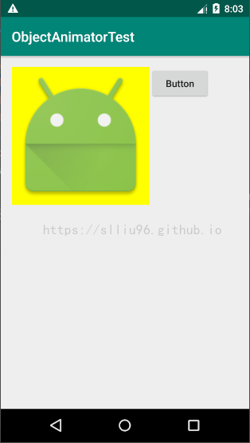
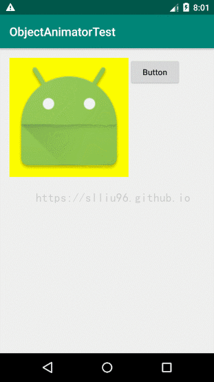
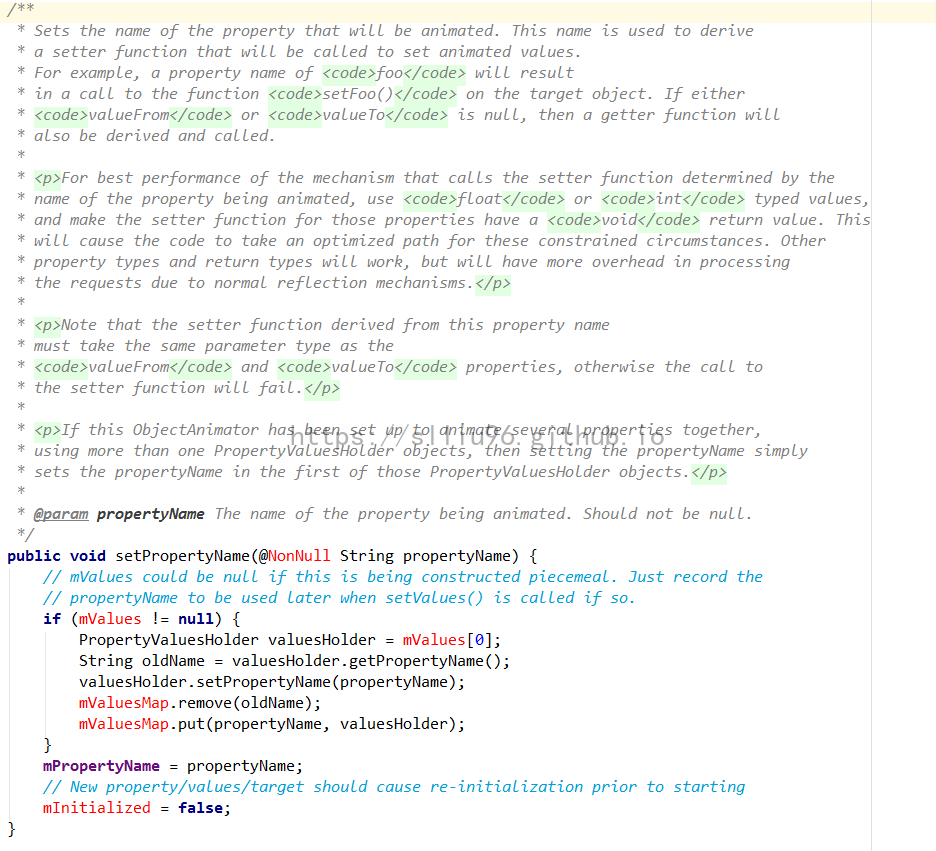
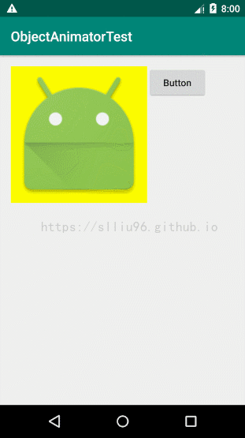
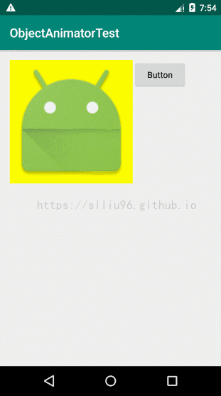
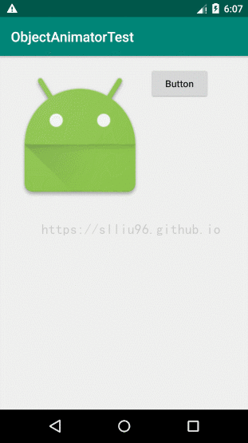
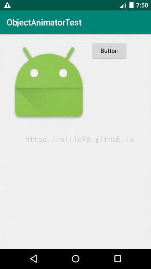
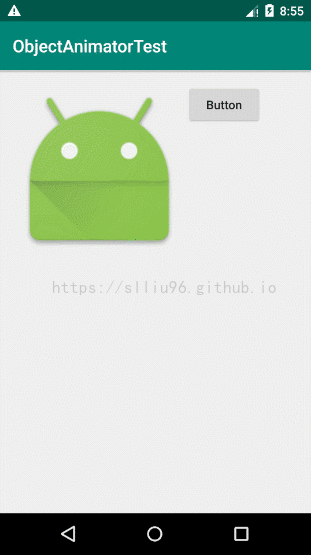

Android-ObjectAnimator
Android-ObjectAnimator
前言：之前的项目有一个功能需要对“画布”进行动画变换而不改变 View 本身，在上一篇 Android属性——Matrix矩阵 中，已经用 Matrix 实现了对画布的变换，但只能实现跳跃式变换，还需要加上平缓的动画过渡效果，因此搭配使用 ObjectAnimator 实现功能并记录于本文。
1. 构思
在项目中，有一个功能是希望能在介绍页对 App 的功能做一些引导指示，一开始构思这个效果的时候，最简单的也是最容易想到的方式就是预设固定的图片，在需要时设置显示，不需要提示时隐藏：
1 | // 需要提示时 |
但是这种方式太过简单和死板界面也相当不优雅，并且也只能完成一些非常非常简单的视图展示效果，在需要动态展示一些过程的时候就很难实现预期效果了。于是想到了 ValueAnimator ——数值属性动画这个神奇的东西，ValueAnimator 是一个非常强大的类。但是为什么最后还是没有用 ValueAnimator 呢？接下来本篇就会对 ValueAnimator 做一个简单的介绍，并解释其与 ObjectAnimator 的联系和异同。
2. ValueAnimator与ObjectAnimator
提到这两个东西，就必须首先说明：ValueAnimator 是 ObjectAnimator 它爹（ObjectAnimator：？？？），ObjectAnimator 是继承自 ValueAnimator 的，因此 ObjectAnimator 具有 ValueAnimator 的全部特性，并重写了 ValueAnimator 中的部分方法，定性地总结一句，ObjectAnimator 具有更高的灵活性和便捷性。
2.1 ValueAnimator的基本介绍
虎父无犬子，ObjectAnimator 既然能被广泛使用，其父类 ValueAnimator 作为一个强大的属性动画类当然要放在前面先说说了。ValueAnimator 提供了一系列改变属性的方式，在提供属性动画时，可以选择不同的数值增长方式控制属性值，线性增长、曲线增长等等，例如在缩放显示图像的过程中，如果选择线性增长，图片将匀速缩放，如果选择曲线增长，图片可以以加速或减速的方式缩放，并且还支持在动画执行过程中获取其值的分布和执行的过程监控等，但是！ ValueAnimator 本身并不会改变控件的属性，也不会直接与动画本身进行联系和控制，常用的创建一个 ValueAnimator 对象的方法是：ValueAnimator valueAnimator = ValueAnimator.ofXXX(xxx...);，其中 XXX 表示不同类型的数据（int、float、args等），xxx... 表示变化范围，是一个可变长参数，例如给定 ofInt(1, 0);，表示从1变为0，给定 ofInt(1, 0, 1); 表示从1变为0再变为1。
ValueAnimator 实现动画的原理在于使用了：Interpolator（插值器） 和 TypeEvaluator（数值计算器），通俗的说，Interpolator 可以根据给出的值来设定数值的变化方式，例如上文中提到的线性和曲线方式。其他 Interpolator 可以参考下面引用博文内的配图（特别简单明了，大赞！）。
在缩放执行的过程中，动画效果主要就是靠这两个工具来实现的。当我们给出需要缩放的目标大小是从原大小（缩放率为 1 ）放大到 2 倍（缩放率为 2），缩放时间为 1 秒，并选择线性增长的 Interpolator，那么 TypeEvaluator 就会生成一个时间长度为 1 秒，且缩放值从 1 到 2 的一系列数值，我们无法列举出每一个产生的数值，但是可以知道，当动画刚刚开始第 0 秒时，TypeEvaluator 计算的缩放率是 1；当动画结束的第 1 秒时，缩放率是 2；而在中间第 0.5 秒时，缩放率是 1.5 …… 也就是说，TypeEvaluator 会根据选定的 Interpolator 替我们计算好了某个时刻应该变化的具体值是多少，然后通过快速、连续地设定这个值来产生动画的效果。下面是改变一个 ImageView 的透明度的 Demo，布局很简单，一个 ImageView 一个 Button：

点击 Button 改变透明度：
1 | // 初始化控件 |
看一下效果：

当然这里还要提到一个工具： AnimatorUpdateListener，上文已经提到，ValueAnimator 会自动替我们计算好需要改变的数值，但是对于 Android 系统而言，它怎么知道数值到达几了呢？又该如何做对应的事件反馈呢？这就用到了 AnimatorUpdateListener 了，顾名思义这是一个 Listener，监听的就是 ValueAnimator 中 TypeEvaluator 产生的值，在 ValueAnimator 中，所有产生的值会根据给定的范围划分成比例的形式，例如由原大小缩放到2倍的动画中，缩放率为1.5时的比例就是0.5，AnimatorUpdateListener 可以监听这个数 TypeValue 的变化，我们可以自行给 TypeValue 变化的值做一些事件处理，例如放大到一半的时候顺便改变一下透明度，等等，然而从上面的步骤来看，其实它本身完全没有接触任何一个控件，而是产生一系列的数值，再由我们人为地给控件指定对应的值来实现动画效果。以上就是关于 ValueAnimator 的一些简单介绍了，其实逻辑非常简单，通俗地理解，就是把我们人为 while(true) 的步骤交给Android提供的自带工具来处理。
总结一下 ValueAnimator 实现动画的步骤：
- 指定需要动画变换的值的范围
- 指定动画变换的时间
- 通过 ValueAnimator 对象指定动画的插值器变换方式 Interpolator
- 通过 ValueAnimator 对象的 TypeEvaluator 产生值
- 在监听器 AnimatorUpdateListener 中监听数值的变化并指定事件处理
2.2 ObjectAnimator的基本介绍
上面介绍完了 ValueAnimator，接下来就要说说其子类 ObjectAnimator 了。既然是子类，当然 ValueAnimator 具有的一切特性 ObjectAnimator 也具有，并且通过重写父类的部分方法，从而提供了更高的易用性。举个例子，在 ValueAnimator 中，由于本身并不接触控件，因此对动画的实现始终需要我们手动去做一些处理，但是 ObjectAnimator 就大大提高了普遍情况下的简易性——它可以直接控制控件的常规属性，例如透明度、 缩放、旋转等等，对于不同的控件，都可以直接指定控件拥有的属性，用同样的方式创建一个 ObjectAnimator 对象：
1 | ObjectAnimator objectAnimator = ObjectAnimator.ofXXX(Object target, String propertyName, xxx...); |
- target: 需要应用变化的控件
- propertyName: 需要改变的控件具体要改变的属性名。
- xxx…: 需要改变的范围，是一个可变长参数，与上文中 ValueAnimator 的一样，就不重述了。
这里主要讲一下 propertyName 的一个注意事项。在源码中，propertyName 最后会被 setPropertyName(String propertyName); 方法调用，对于这个方法源码的解释有这么一段：

意思就是，根据传入的 String 属性名，通过把首字母强制大写，并在前面加上 “set”，然后反射寻找对应的设置方法。例如要改变 ImageView 的透明度，我们可以直接用 tvText.setAlpha(alpha); 来实现，但在 ObjectAnimator 的参数中，属性名要写 "alpha" 或 "Alpha"，如果我们写成 "setAlpha"，最后查找的方法就变成了 setSetAlpha();，这显然是不对的。
用 ObjectAnimator 同样实现一下设置 ImageView 的透明度1秒内逐渐消失的动画：
1 | ObjectAnimator objectAnimator = ObjectAnimator.ofInt(ivImage, "alpha", 1, 0).setDuration(1000)； |
可以很明显地看到，这个方法指定了控件—— ivImage，以及变化数值作用的属性的 setter 方法—— setAlpha();，只需要一步，就能实现与上文 ValueAnimator 一样的效果，是不是方便的多了？
关于属性动画 ValueAnimator 与 ObjectAnimator 及其他更全面的介绍可以参考附录【2】
3. ObjectAnimator配合Matrix
了解完 ObjectAnimator 的基本内容后，思考一个问题：怎么用 ObjectAnimator 实现复杂的变换？
在上文讨论的几个属性：透明度 Alpha、缩放 Scale、旋转 Rotate 等，几乎所有的 View 控件都具有直接设置的 setter 方法，可以很方便的直接套用 ObjectAnimator 来实现，但是如果是比较复杂的变化呢？比如，想要做一个由方形变为平行四边形的 “错切”过程动画 又或者是想要 以某个特定的点作为圆心进行缩放，这些在基本控件的内部并没有这么详细的 setter 方法，那要如何实现呢？
想要实现上述需求的方法，那就是利用 Matrix 啦！在前一篇博客中介绍了关于 Matrix 的一些基本内容，可以知道 Matrix 是控制控件变换的一个很强大的工具，并且控制的是控件内部的画面而不是控件本身，那么如果能用 ObjectAnimator 不直接控制控件，而是控制一个 Matrix，再由 Matrix 去控制控件，就能达到需求了。这么听起来，其实跟 ValueAnimator 非常像都是通过控制数值间接控制控件，因为毕竟 ValueAnimator 才是爹呀！（ObjectAnimator：？？？？？）
其实前面讲了过程，小伙伴肯定也已经想到了一个非常简单的实现方式：重写 View！在 View 中写一个接收 Matrix 的方法，通过这个方法把 Matrix 应用到图像中去实现变化效果。在 Demo 中，只是用了简单的 Scale 缩放，其实 ImageView 本身也提供了 setScaleX(); 和 setScaleY(); 方法，可以通过 PropertyValuesHolder 来一次改变两个属性（下文会讲到），但是我就想一次性同比例缩放，并且这个 Demo 仅仅是提供一种解决思路，例如在使用 Matrix 进行 Skew 错切变换时，重写 View 实现就是一个好方法了，读者可以举一反三多多尝试其他需要间接改变的属性。
还是这个 Demo，上代码！
首先因为我们需要自己的 View 中可以接收到 Matrix，所以先写一个接口，定义接收 Matrix 的方法，然后在自定义的View中实现这个接口并重写接口方法：
1 | // 定义 接收Matrix方法的接口 |
也可以不用接口直接在自定义View中添加方法，但养成良好的编程习惯总没有坏处。接下来自定义 View 继承自 ImageView（根据需求选择继承）并实现接口方法：
1 | // 这是我自定义的 ScaleImageView，继承自 ImageView |
1 | // MainActivity 中就简单了，在需要执行动画的地方创建 ObjectAnimator 再指定变化范围即可 |
再看一下效果：

可以看到，动画还是很好的，相比我们手动写成循环的方式，ObjectAnimator 流畅多了，这里给一个小提示，因为 Matrix 如果采用 set 的方式时都会先重置为单位矩阵，因此不需要每次传值缩放时都重新 new Matrix();，直接在自定义的 View 中声明并初始化一个 Matrix，可以减少对象的创建，节约内存。
更多关于 ObjectAnimator 的详细资料可以参考附录【3】【4】
4. ObjectAnimator多动画并行
现在我们的动画效果出来了，但是假如我又有一个需求，希望在放大的动画结束后再来个缩小的动画，怎么办呢？最直观的方法就是：在放大的动画下面在加一个缩小的动画不就行了吗？实践是检验真理的唯一标准，试一试就知道！在 MainActivity 调用动画的下面再加上缩小的动画：
1 | // 放大动画 |
结果发现最后的效果是：

视觉上来看，仿佛放大的动画并没有执行，直接跳过到了缩小的动画，但其实放大动画是执行了的，之所以会突然放大一下，并不是因为放大动画执行完的原因，而是我们设置的缩小动画的起始大小就是2f——两倍，所以动画会先从两倍大小开始缩小，造成这样的原因是因为：ObjectAnimator 在执行一个动画时，是非线程阻塞的 （这也是比我们自己用while()写更好的原因之一） ，在执行一个动画的时候，可以理解为 objectAnimator.start(); 开始执行后，具体这个动画怎么变化，变多久，都交给后台处理 （其实这个说法是不严谨的，因为要更新UI只有主线程才能做到，后面整理清楚了会专门再发一个从源码角度的解释） ，然后主线程继续向下执行代码，而下一句代码就是缩小动画，于是放大动画刚刚开始，还没来得及展示，就已经开始执行缩小动画了，于是就变成了图中的效果。我们把第二个缩小的动画用改变透明度来替换一下，就直观多了！
1 | // 放大动画 |

这个效果就很明显了，放大也是执行了的，改变透明度也是执行了的，因为每一次动画开始执行后就会继续向下执行，因此视觉上看起来很就是一起执行了。这也提供给了我们一个同时执行多个动画效果的思路：硬生生的把多个动画效果顺序提交执行。但是这也是非常非常不友好的实现方式，在每个动画效果比较简单、设备性能较好等情况下也许没有很严重的问题，但是如果动画复杂、处理量大，就会导致动画严重卡顿。于是这里就引出了 PropertyValuesHolder 这个工具，它和数据库中的 Transaction 事务管理非常像——要么不做、要么全做。
4.1 PropertyValuesHolder属性值保存器
PropertyValuesHolder 一次性记录多个要执行的动画，然后把自己传给 ObjectAnimator，来实现多个动画同时并行 （事实上从底层上来看，CPU的处理在微观上依然单线程的，并且 PropertyValuesHolder 也有导致卡顿的风险） ，下面是 PropertyValuesHolder 的使用样例：
1 | // 通过 PropertyValuesHolder 存入需要改变的属性和值 |
从 PropertyValuesHolder（太长了，简称 PVH）的字面上就可以理解，PVH 是一个属性取值的保持器，也就是说，一个 PVH 对象就存入了一个你需要改变值的属性以及这个属性需要变化的取值，但是 PVH 本身是不接触控件的，从这方面来看，PVH 像极了 ValueAnimator，不同点在于 PVH 依然需要针对具体的属性。动画效果与上面的“放大接改变透明度”一样，就不再重复贴图了。
4.2 AnimatorSet动画集合
AnimatorSet 是一个动画集合，与之类似的还有一个叫 AnimationSet的东西，从功能性来说，AnimatorSet 更为强大，AnimationSet 实现的效果与 PropertyValuesHolder 相似，都是把动画组合在一起执行，而 AnimatorSet 强大的地方在于，不仅能让动画组合执行，还能通过指定顺序让多个动画依次执行，因此本文中仅对 AnimatorSet 进行简单的讲解，篇幅有限，此处就只列出基本的应用方法，细节原理和复杂应用考虑在日后补充。
先说说其中两个方法：
AnimatorSet.playTogether(property1)playSequentially(property2)
这两个方法从字面上就很好理解了，playTogether() 是同时进行，playSequentially() 是逐一进行。这里 property1 和 property2 不是具体的参数，因为这两种方法都分别各有两种类型的参数。
playTogether() 方法的参数可以是： Collection<Animator> 和 Animator...，先看后者很明显可以知道，毕竟这个方法是要实现“同时进行”，所以肯定支持多个动画一起作为可变长参数传入，第一个 Collection<> 就是集合，泛型是 Animator 类，也就是说 Collection 集合内的每一个元素都要是 Animator 的对象，这和可变长的 Animator… 是一样的。之所以是集合还是因为这个方法要同时执行所有动画，所以所有的动画在逻辑上是“一层”的，没有顺序、前后之分，在 Java 中就用集合来表示。
playSequentially() 的方法参数可以是：List<Animator> 和 Animator...，与上面的大同小异，传进去的都是一个或多个 Animator 的对象，但是这里是 List 列表而不是集合，就是因为这个方法是逐一进行，是有执行的前后顺序之分的，在 Java 中就用 List 来表示。
从参数来看，无论是哪一种，目的都是传 Animator 对象过去，也就是我们要先定义一个个 Animator 的对象，然后制定出每一个 Animator 需要做的动画效果，再把这些（或一个）Animator 交给 AnimatorSet 替我们完成。在 Demo 中，我们可以这样运用：
1 | // 放大动画 |
除了上面两个方法外，还有以下这几个方法：
play(Animator)with(Animator)before(Animator)after(delayTime)after(Animator)
依然从字面上看就很好理解，play() 就是当前需要进行的动画，with(Animator) 就是同时执行的动画，before(Animator) 和 after(Animator) 就是需要在参数中的 Animator 前／后执行，而 after(delayTime) 方法是用来设置动画延迟执行的时间。具体的使用方式直接通过代码解释：
1 | // Animator 集合 |
看一下我们预期的播放顺序，四个play操作从上到下的预期结果是：
- 执行透明度减半，同时执行放大
- 执行放大，并且放大在旋转前执行
- 执行缩小，并且在旋转之后执行（也就是先旋转再缩小）
- 执行旋转
整理一下播放顺序应该是：1（透明度减半，同时放大）→ 2（旋转）→ 3（缩小）。
可以看到，我们在 play(Anim_1) 动画后定义了 with(anim_2) ／ before(anim_2) ／ after(anim_2) 后，还需要在下面正式调用 play(anim_2) 才能完成播放，这是因为 with、before、after 只是制定了播放的顺序，并没有表示开始播放。并且，这三个方法是可以链式调用的，也即：play().before().after().with()... 但是我们应当避免这种写法，以避免出现 play(anim1).before(anim2).after(anim2) 这种矛盾的情况。看一下实际的动画结果：

确实和预期是相符的！AnimatorSet 也确实是一个对动画进行控制非常非常强大的工具。
AnimatorSet的详解可以参考附录【5】
AnimatorSet以及AnimationSet的区别可以参考附录【6】
4.3 AnimatorListener动画监听
在做动画效果的时候，往往我们不会仅仅只是为了展示，而会接一些逻辑上的事情，比如 Splash 页面的动画在执行完后要进入主页、更改信息的动画执行完后要退回上一个界面、Tips 引导动画执行完后要打开对应的操作窗口等等，但是上文我们也提到过，不论是 ValueAnimator 也好，ObjectAnimator 也好，或者 Animation 视图动画也好，其动画的运行过程可以 理解为 是在后台执行的，而主线程依然会继续向下执行代码，因此如果我们只是简单地把需要操作的事务代码放在动画执行的后面，会导致事务和动画一起执行，那么我们到底要如何才能做到 “动画执行完之后操作事务” 呢？方法就是：利用 AnimatorListener 监听器。
同理，既然 AnimatorListener 是一个监听器，那它就需要被绑定到想要监听的动画上，动画监听有四个需要重写的方法：
onAnimationStart(Animator animation){...}: 动画开始时要做的onAnimationCancel(Animator animation){...}: 动画被取消时要做的onAnimationRepeat(Animator animation){...}: 动画重复执行时要做的onAnimationEnd(Animator animation){...}: 动画结束时要做的
命名都很直观，第 1 个方法就是动画一开始要做的事，很简单就不多说了。这里再提一下第 2、3 个方法。onAnimationCancel() 是动画被取消时要做的，和 end 不同的是，cancel 中的事务是我们人为地调用 animator.cancel(); 方法时才会触发，而 end 是动画自己执行完后就会执行的。
至于 onAnimationRepeat(); 方法，我们在设置一个动画不论是属性动画也好还是视图动画也好，都可以设置动画重复的次数：
1 | objectAnimator.setRepeatCount(5); |
onAnimationRepeat(); 方法就会在动画每次重复执行时调用，并且第一次执行也算在内，也就是说我们设置的 repeatCount 是几，这个方法就会调用几次。
这么一看马上就知道了，要在动画结束时执行某些事务，直接重写 onAnimationEnd() 方法即可。如果我们想要 Demo 中的图片无限重复放大再缩小再放大再缩小……最直观的的解决方案当然是利用死循环来做，但是前面也说了，while 会导致主线程阻塞，对于比较简单的动画效果（例如本文的 Demo，或者旋转等等规律步骤比较少的）可以进行如下设置：
1 | objectAnimater.setRepeatCount(ValueAnimator.INFINITE); // ValueAnimator.INFINITE是int型，值为-1 |
这是 Android 官方给我们的方法，但是如果我们有一个非常非常复杂的动画（虽然基本上是没有这种需求的，Android 的动画大都能通过分解转换成简单动画）比如我非要把：放大，旋转、对称、缩小、错切、平移、旋转……作为单次动画流程然后再无限循环这个流程的话，显然我们很难把这么多操作写在一个方法里完成，这时就可以用一个脑洞大开的方式曲线救国啦—— AnimatorListener 的迭代 ！
4.3.1 AnimatorListener的迭代
仔细想一下 AnimatorListener，里面有 onAnimationEnd() 方法，再仔细想一下，只要我们设置的不是无限动画，那就都会在结束时调用监听。利用这个思路，我们可以定义一个动画执行步骤的变量，用来引导动画进行的顺序。在 Demo 中，仅用缩放作为示例，复杂的动画变换可以参考思路进行拓展。
先写出成员变量和动画监听部分，在按钮的点击事件中有一些处理放在下面讲。
1 | /** |
接下来就是点击按钮开始动画的部分了。在具体的应用中，并不一定非要用 Button 来触发动画，这里只是专门做一个提醒来指出在使用手动触发动画时一个容易出错的地方。在 Demo 中，按钮主要用来启动动画的第一次执行，那么我们常常只会想到要这么写：
1 |
|
执行一下

乍一看确实没什么问题，确实达到预期的效果了，但是如果我们这时多次点击按钮就会“翻车”
原因也很简单，因为我们每次点击时都会触发一次重新执行动画，并且也会加入动画监听，也就相当于每次点击都会增加一个动画效果的运行线，每个动画效果又自行监听运行过程，所以就会造成这样的混乱场面，如果是上文中的一系列复杂动画，翻车现场只会更加惨烈～解决的办法也很简单，就是每次点击都让动画步骤初始化从第一步开始，然后取消原先的所有动画，并且取消原先绑定的监听器，然后再重新绑定和设定动画的效果。改进的点击事件代码如下：
1 |
|
改进完后再看，也就不会出现翻车现场啦！

这下这个 “脑洞大开然鹅好像并没有什么卵用也不知道为什么要写这么多的需求” 总算是解决了，代码而言是真的很简单也很少，但是思路和解决方案希望可以给同是初学的读者们一些灵感，用以运用在大型、复杂的项目中去。
本篇结合前一篇写的 关于Matrix 的文章，应该可以解决大部分情况下简单的动画场景了，但是这两篇博客的讲解可以说是非常皮毛的，甚至对于我自己的实际应用都远远不够，但还是那句话，本文主要目的是提供一种思维方式，再灵活运用进实际的项目中去。对于深入的 ObjectAnimator、 ValueAnimator、 Matrix内容，还是应该细读官方的文档和源码为好。